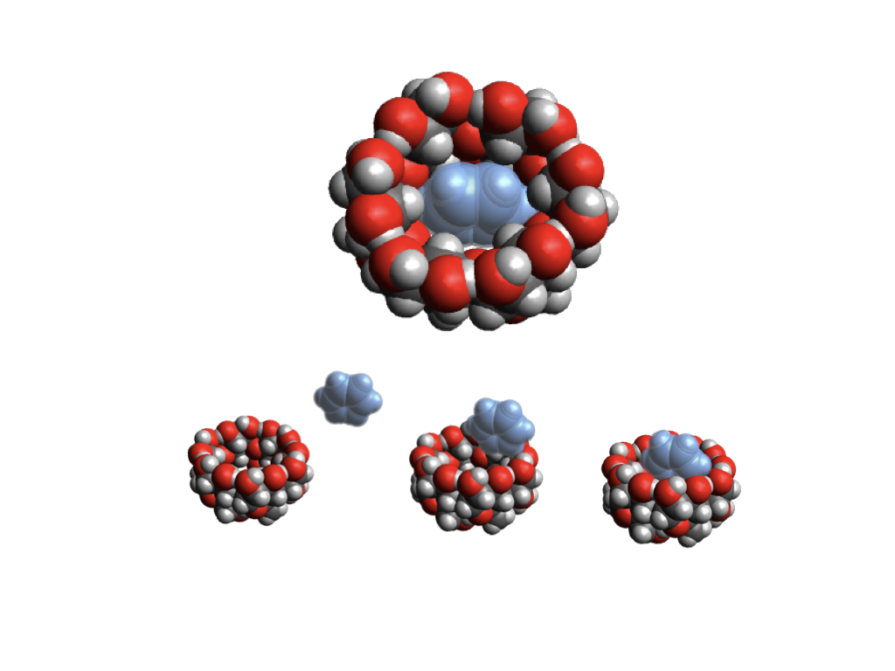
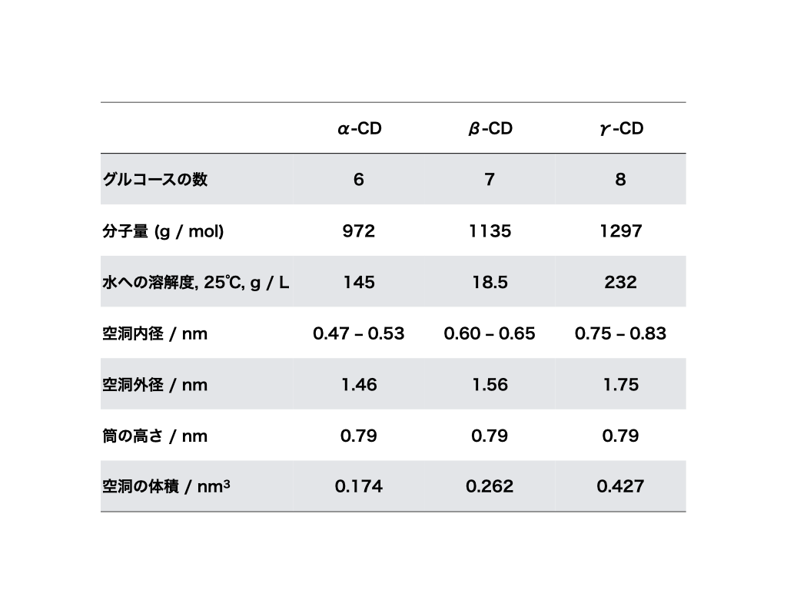
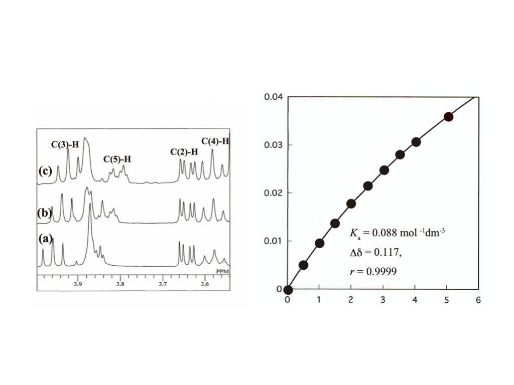

シクロデキストリンとは
シクロデキストリン（CD）は、グルコース分子が環状に連なった天然由来のオリゴ糖です。分子の中央に疎水性の空洞を持つカプセル状の構造をしており、その空洞の中にさまざまな分子やイオンを選択的に取り込みます。この現象を「包接」と呼び、できた錯体を「包接錯体」と呼びます。
包接という現象の本質は、分子間相互作用にあります。シクロデキストリンの化学は、疎水性相互作用・水素結合・ファンデルワールス力といった分子間の力を理解し、応用することを目指して発展してきました。生体内でも同様の分子間相互作用が酵素反応・受容体結合・脂質の消化吸収など多くの現象を支配しており、シクロデキストリン研究はその理解と応用への橋渡し役を担っています。
シクロデキストリンには、グルコースの数によって3種類があります。6個のグルコースからなるα-CD、7個のβ-CD、8個のγ-CDで、空洞のサイズがそれぞれ異なります。比較的小さな分子に対しては分子全体を包接できますが、大きな分子に対してはその一部のみを包接することもあります。脂肪酸とシクロデキストリンとの包接錯体はその代表的な例です。
シクロデキストリンは食べられる化合物であることも大きな利点の一つです。この「食べられる分子カプセル」を利用した研究を進めています。
基礎研究の蓄積
当研究室ではかつて、α・β・γ-シクロデキストリンとさまざまな分子との包接錯体形成をNMR分光法や熱力学的解析によって体系的に研究していました。有機溶媒・エチレングリコール・シクロアルカノール・ナフタレン誘導体・有機リン酸などとの包接錯体の結合定数を決定し、包接の構造・安定性・選択性を定量的に明らかにしてきました。また、シクロデキストリン誘導体（グアニジノ基付加体・メチル化体など）の合成と分子認識特性についても研究しています。
その後、学部のNMR装置の運用停止を機に、研究の軸を応用分野へとシフトしました。しかし基礎研究で培った「どのゲスト分子がどのCDに、どの程度包接されるか」という分子レベルの知見は、現在の食品応用研究においても研究の根幹をなしています。γ-CDとエゴマ油の組み合わせを選んだ理由も、この基礎研究の蓄積があってこそです。
基礎研究で得た包接化学の知見 → γ-CDとエゴマ油の包接錯体設計 → 体内吸収性向上の発見へ。
土台となる分子認識の理解が、オリジナリティの高い応用研究を可能にしています。
現在の研究アプローチ
現在は包接化学の知見を基盤に、食品機能や生体への影響を実験的に検証しています。主な分析手法は以下のとおりです。
- ✓ HPLC・LC-MS・GC-MS — 脂肪酸・アミノ酸などの定性・定量分析
- ✓ RT-qPCR — 遺伝子発現解析
- ✓ 動物実験 — ラット・マウスを用いた体内吸収性・臓器への影響の評価
- ✓ 統計解析（R・Python） — 実験データの解析・可視化
分子の「包む・包まれる」という基礎的な相互作用の理解が、食品科学・栄養学への橋渡しとなっています。
図・データ



関連論文
Yoshikiyo et al. (2015) Beilstein Journal of Organic Chemistry — doi:10.3762/bjoc.11.168
Yoshikiyo et al. (2012) Bulletin of the Chemical Society of Japan — doi:10.1246/bcsj.20120140
Akita, Yoshikiyo & Yamamoto (2014) Journal of Molecular Structure — doi:10.1016/j.molstruc.2014.05.051